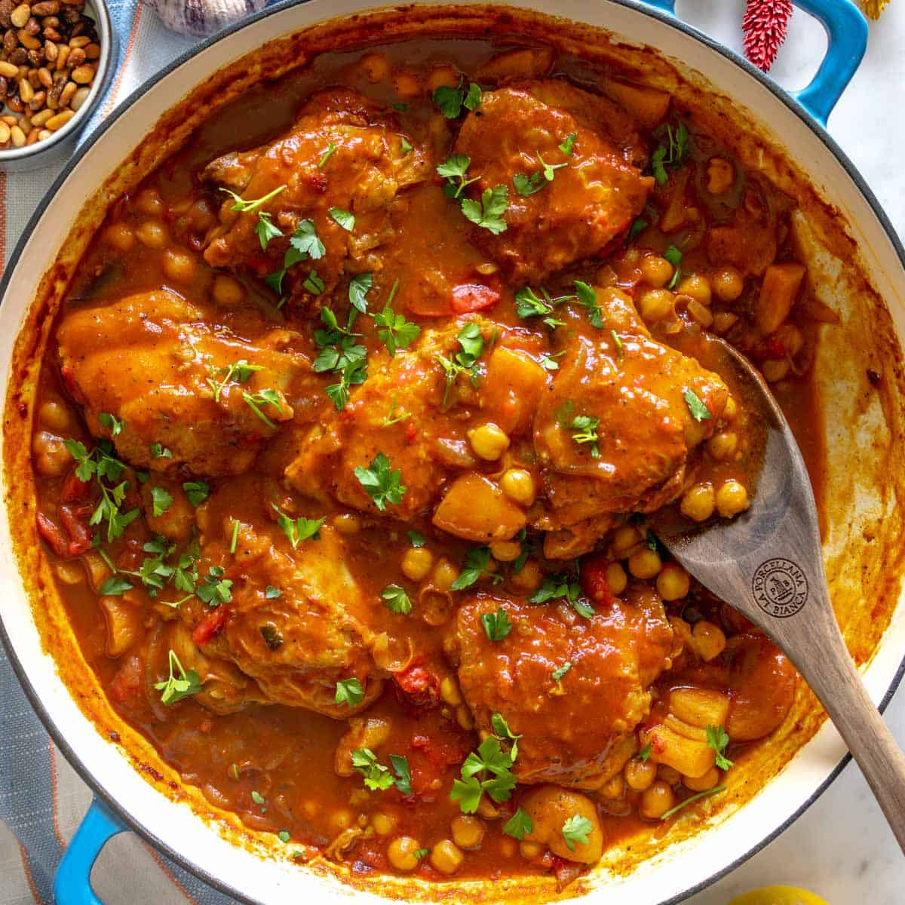

<!DOCTYPE html>
<html lang="en">
<head>
    <meta charset="UTF-8">
    <meta name="viewport" content="width=device-width, initial-scale=1.0">
    <title>North Africa - Taste of Africa</title>
    <link rel="stylesheet" href="../styles.css">
</head>
</html>
<body>
    <header>
        <a href="#" class="logo">TASTE OF AFRICA</a>


        <nav class="navbar">
          <a href="West-africa.html">West Africa</a>
          <a href="East-africa.html">East Africa</a>
          <a href="North-africa.html" class="active">North Africa</a>
          <a href="Southern-africa.html">Southern Africa</a>
  </nav>
    </header>
    <h1 class="region-culture">North African Cuisine</h1>

  <!-- Region Description -->
  
  <section class="Food-culture">
    <h2>North African Food Culture</h2>
    <p>
        North African cuisine is characterized by aromatic flavors, complex spice blends, and slow-cooked dishes. Influences from Arab, Berber, and Mediterranean culinary traditions have shaped a rich culinary heritage that emphasizes communal meals and hospitality. Staples such as couscous, wheat, legumes, and rice are often paired with vegetables, meats, and aromatic sauces.
    </p>
  </section>
  
  <section class="staples">
    <h2>Staples of North African Cuisine</h2>
    <p>
        North African cuisine relies on a combination of grains, legumes, and preserved foods that form the foundation of most meals. Common staples include couscous, <mark>wheat-based breads</mark>, rice, and lentils. Vegetables like carrots, tomatoes, zucchini, and onions are frequently used, alongside legumes such as chickpeas and fava beans.
    </p>
  </section>
  
  <section class="techniques">
    <h2>Cooking Techniques</h2>
    <p>
        North African cuisine emphasizes slow, layered cooking methods that develop rich flavors and highlight the region’s aromatic spices. One of the most iconic techniques is <mark>braising</mark>, often used for meats and vegetables in dishes like Tagine, allowing ingredients to slowly absorb the flavors of <mark>cumin</mark>, <mark>coriander</mark>, <mark>cinnamon</mark>, and <mark>saffron</mark>.
    </p>
  </section>
  

  <!-- Example Dishes -->
  <section class="example-dishes">
    <h2>Example Dishes</h2>
    <div class="dishes-list">
     <br>
     <a href="../Recipes/tagine.html">Tagine recipe</a>
     <p>A traditional North African slow-cooked stew of meat, vegetables, and dried fruits, flavored with aromatic spices, often served with couscous or flatbread.</p>
    </div>
  </section>

  <!-- Embedded Video -->
  <section class="embedded-video">
    <h2>East African dishes</h2>
    <iframe width="560" height="315" src="https://www.youtube.com/embed/DRgn7_HKg1A?si=9ZTuXNvPhGkg0P1S" title="YouTube video player" frameborder="0" allow="accelerometer; autoplay; clipboard-write; encrypted-media; gyroscope; picture-in-picture; web-share" referrerpolicy="strict-origin-when-cross-origin" allowfullscreen></iframe>
  </section>
  </div>
  <!-- Go Back -->
  <div class="go-back">
    <p><a href="regions.html">&larr; Go Back to All Regions</a></p>
  </div>

</body>
<footer class="footer">
  <div class="footer-content">
    <p>&copy; 2025 Kolade Adepoju. All rights reserved.</p>
  </div>
</footer>
</html>